|
| ||
|
| ||
Brooks Cutter, Program Manager, Windows Media Technologies
Microsoft Corporation
February 3, 1999
Integrated with Windows Media Technologies, Microsoft® PowerPoint® 2000's new feature, Presentation Broadcasting, enables you to broadcast presentations live over the Intranet or Internet and optionally record the presentation for on-demand viewing. In order for you to create this type of presentation, you will need PowerPoint 2000, an application to be included in the spring release of Microsoft Office 2000.
In this article we use the PowerPoint 2000 Beta 2 version throughout our demonstration. If you purchased the Preview Program Kit  before the end date, you can follow along with your copy of PowerPoint 2000 Beta 2. If you did not purchase the beta, you can still order the Preview Program CD from http://www.microsoft.com/office/2000/office/cpp/ as well as review the Product Overview
before the end date, you can follow along with your copy of PowerPoint 2000 Beta 2. If you did not purchase the beta, you can still order the Preview Program CD from http://www.microsoft.com/office/2000/office/cpp/ as well as review the Product Overview  .
.
Perhaps the best way to understand what PowerPoint 2000 and Windows Media Technologies can do is to actually see a presentation. View our presentation by clicking this icon:
Note For viewing, you will need a browser that supports Dynamic HTML, such as Internet Explorer 4.0 or greater, and the Windows Media Player. You'll also need a 28.8 kbps or faster connection to the Internet for streaming the presentation.
Now that you've seen what PowerPoint 2000 can produce, let's find out how you can do it yourself.
Audio: Most systems today come with a sound card compatible with Windows. You'll want a good microphone for the best sound quality, and if you wander while you talk, consider going wireless. When you broadcast your presentation, include the audio of the speaker at minimum.
Video: If you want to transmit the video of the presenter, you'll need not only a video camera but also a fast processor. Compressing video in real-time can require a fast processor such as a Pentium II 266 megahertz (MHz) or higher. To avoid slowing down your presentation, you may want to use a separate machine. For the camera, you can connect directly to the PC using a PCI board, PCMCIA card, USB connection or through the Parallel port. Another option is to use a video capture card supported by Windows Media Services, and connect it to a standard analog video camera.
While the presenter may need to have PowerPoint 2000 and audio/video hardware, all the user needs is the Windows Media Player and a Dynamic HTML-capable browser like Internet Explorer 4.0 or greater. It is also a good idea to have both of these installed on the presenter's machine, just in case they want to see what the audience will see.
To create an online presentation, first create your slides with PowerPoint as you would for any other presentation. Then Setup and Schedule your presentation using the Online Broadcast option under the Slide Show menu.
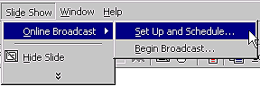
Figure 1: Setup and Schedule Menu Selection
When you Set Up and Schedule a presentation, you'll be presented with the Broadcast Schedule wizard. This walks you through everything you need to do in order to setup an Online Broadcast.
To setup a new broadcast (or if you've already scheduled a pre-recorded one to run on a server) you can change the existing settings or update the presentation file you plan to use.
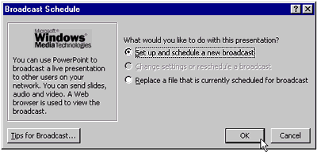
Figure 2: Broadcast Schedule Wizard
Once you click OK you'll be presented with the Schedule a New Broadcast window. This window contains two tabs: Description and Broadcast Settings.
When you select the Description tab, you'll have a chance to enter information the audience will see before the presentation begins. Each of the fields listed on the Schedule a New Broadcast window are self-descriptive. The title is a few words summarizing your presentation, and the description is a longer summary that can run from a sentence to a few paragraphs. For the speaker information, you can enter your name and email address. When you are done, select the Broadcast Settings tab.
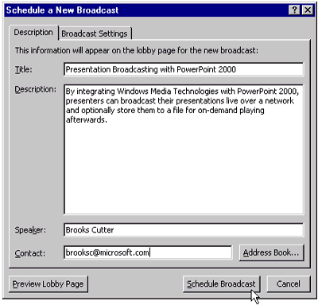
Figure 3: Schedule a New Broadcast Window, Description Tab
In the first section, Audio and Video, you'll specify which media you'll include in the presentation and which machine you'll be transmitting from. To send audio, you need a sound card with a microphone plugged into it only. Transmitting video requires a camera attached directly to your PC or through a video capture card (see System Requirements for more information).
In most cases, you'll want to attach these devices to the machine you are presenting from - but you also have the option to attach these to another machine. You would do this if you are presenting in a large auditorium, for example. Here, you would want to put a PC in the back of the room with the video camera and microphone attached to it.
Another possibility is if you are transmitting video at a high data rate where this could impact the performance of flipping slides on your presentation. This would require you to pre-configure the remote machine, all of which is documented in the soon-to-be-released Office 2000 Resource Kit.
Whatever your needs, PowerPoint makes it easy to do an online presentation with one or two machines.
In the next section, Audience feedback during broadcast you can specify ways the audience can communicate with you - either during or after the presentation. The most common way is through email, so if you want to receive questions just simply check the Viewers can email box and enter your email address. For more elaborate communications you can setup an IRC-compatible chat server, such as the Microsoft Exchange Chat Server, and allow two-way interactive communication. To use this feature you'll need to enable it when you install Office 2000. If Enable Chat is grayed out, contact your system administrator for assistance.
In the third section, Recording, you can tell PowerPoint to record the audio/video and slide flips for on-demand access later. Here you should specify a directory path where an Advanced Streaming Format (ASF) file should be saved.
Note For information on ASF, refer to http://msdn.microsoft.com/workshop/imedia/windowsmedia/abc.asp.
If you've entered speaker notes into your PowerPoint presentation, you can make these available to users for viewing as well. This is a good place to include topics you'll be addressing during your presentation as well as reference information, such as Web site addresses or additional contact information.
Finally, you'll need to make some decisions on how to stream the audio/video information across the network. Click Server Options and we'll cover what's involved.
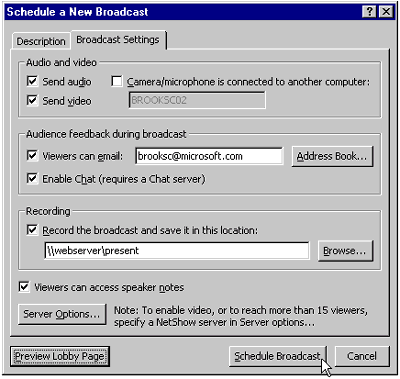
Figure 4: Schedule a New Broadcast Window, Broadcast Settings Tab
In the Server Options window, you'll select the location PowerPoint should write files to and you'll also specify the name of the server that will stream the audio/video. The first step is to Specify a shared location which is a shared directory, either on your own machine or a server, where PowerPoint will create the Web pages for your presentation. When users view your presentation they will retrieve all the pages from this share, so it's good practice to put these files up on a server with capacity for the files and your audience. Since this path will be written into the data files, you should specify the final location where the presentation will live. If you need to move it to another location, you can edit the files to reflect the new location, but avoid this if possible.
The second step is to Specify a Windows Media Services server. You have three options here: not to use a Windows Media Services server, to use a Windows Media Services server or outsource the hosting entirely to a Windows Media Service Provider.
If you choose not to use a server, users will connect directly to the Windows Media Encoder. The encoder is a built-in feature of PowerPoint 2000 and streams the audio/video directly.
This is easy since it doesn't require you to configure the Server for the broadcast. but it does limit the number of users that can view the live presentation to 15, as well as cause streaming from your presentation machine to slow down slide changes and animation. If you plan to include video in your presentation, it's a good idea to use a Windows Media Services instead, so the quality of the video being captured is not affected. It is also important to have all users stream the audio/video from this type of server if the number of users exceeds fifteen.
Assuming you have this server installed, you'll need to create a broadcast publishing point, and configure the server to stream the audio/video directly from the presenter's machine or the system running the Windows Media Encoder.
If you are broadcasting your presentation out to the Internet and don't have the bandwidth or servers available to handle the expected load, use a third-party Windows Media Service Provider to host the content for you. To find out more information on outsourcing your presentation, contact a qualified Windows Media Service Provider.
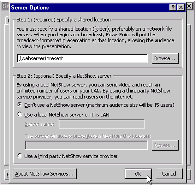
Figure 5: Server Options Window
When you are finished with the Server Options window click OK and then click OK again on the Schedule a New Broadcast window. PowerPoint will proceed to validate your settings and ensure the appropriate directories exist and that everything is working properly. If you've chosen not to use a Windows Media Services server, it will remind you that no more than 15 users are able to view your live presentation and it will remind you to use a Windows Media Services to scale beyond 15 users.
The last step is to create an Microsoft® Outlook® 2000 meeting request with the event information. PowerPoint will create this automatically. You will need to fill in the details including the beginning and end times for the presentation. If you don't have Outlook 2000 installed, then PowerPoint will create an email with your default mail program that includes the details. What you'll lose with a "non-Exchange" email program, is the ability to schedule the beginning and ending times for the presentation. If you don't use Microsoft Exchange as your messaging system, another option is to install Outlook 2000 and configure it to send email via SMTP. This way you can still schedule the date and time of your presentation, but have the ability to send out an iCal calendar request to your existing mail system as well.
Note ICal is a generic, Internet Calendar format for exchanging calendar information between systems.
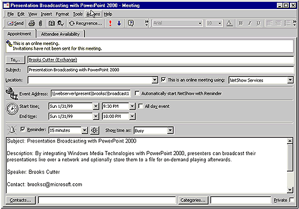
Figure 6: Outlook 2000 Meeting Request Window
Once you've sent the Outlook meeting request, PowerPoint will confirm that the presentation has been successfully scheduled.
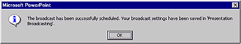
Figure 7: Broadcast confirmation message
Before the scheduled time arrives, plan to spend 15-30 minutes setting everything up and making sure there won't be any technical problems. Going through the pre-presentation setup will take about 5 minutes, but it's good to have the extra time to resolve any issues before start time.
Once you've setup your computer in the room you'll be presenting in, select Begin Broadcast from the Online Broadcast menu as demonstrated below.
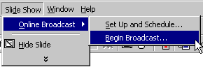
Figure 8: Begin Broadcast Menu Selection Window
This will open the Broadcast Presentation window., which will run through a series of quick tests. One test will check the input from the microphone and adjust the volume level. Another will check for a video signal and will show you what will broadcast (this is so you can center the camera properly on the presenter). The last test checks for connectivity to the Windows Media Encoder.
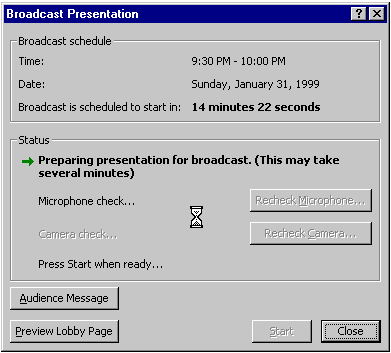
Figure 9: Broadcast Presentation Window
Note The purpose of the Microphone check is to confirm that PowerPoint is able to receive audio from the microphone and allow it to adjust the volume level based on the peaks. Speak normally into the microphone during the presentation and make sure the green progress bar changes length while you are speaking.
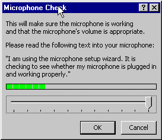
Figure 10: Microphone Check Window
If you've indicated you'll broadcast video from this computer, the next window you'll see is the Video Check window.
With this, you'll see the video that will be transmitted to the audience. Please note that on some cameras, such as the Winnov Videum used here, you may also have the ability to change the brightness of the video or adjust other options. Your ability to adjust the video signal will vary based on the camera used.
For the best quality video, check that you have adequate light levels where the presenter will be speaking, otherwise the color in the video will be dull and the image won't be as sharp. Another best practice is to place the presenter in front of a solid color (or at least prevent any background motion), as this will allow the software to focus on the foreground and result in higher frame rates.
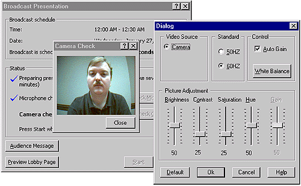
Figure 11: Video Check Window
Once you are done with the audio/video check, you'll return to the Broadcast Presentation window. Here you will wait until it is time to begin your presentation. If you are broadcasting this event live, your audience will begin to show up in the "lobby" before the presentation begins.
The lobby page describes the presentation to the users while they wait until the presentation begins and includes a countdown timer indicating when the presentation will begin.
If you'd like to see this page yourself, you can click on the Preview Lobby Page button on this window. If you select Audience Message, you can communicate with the audience by typing one line messages to them. You might need to use this should your presentation be delayed.
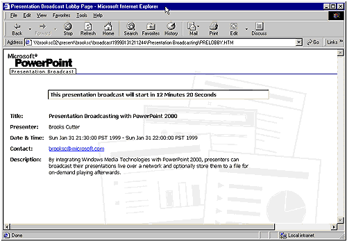
Figure 12: Presentation Broadcast "Lobby" Page
When it is time for your presentation to start, your users will see output similar to Figure 13, but will depend on how you configured PowerPoint in the Schedule a New Broadcast window and may include the Email Feedback and Online Chat buttons, as shown.
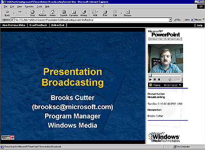
Figure 13: Online Broadcast Window
After you've finished your presentation, you can replay your presentation if you've configured PowerPoint to record your presentation to an Advanced Streaming Format (ASF) file. To view the presentation, access the URL you sent out in a meeting request or email or open the default.htm file from the previously-assigned directory.
If you'd like to learn more about PowerPoint and Presentation Broadcasting, you'll want to review the soon-to-be-released Office 2000 Resource Kit. This includes documentation on the more advanced features.
As you've seen, PowerPoint 2000's Presentation Broadcasting feature makes it easy to broadcast a live presentation across the Intranet or Internet and record a presentation for on-demand access.
Benefits of presentation broadcasting include:
Using this feature is easy for a novice user. The administrator can pre-configure the server information, and as you've seen, the user just fills in the details and starts presenting.
Did you find this material useful? Gripes? Compliments? Suggestions for other articles? Write us!
© 1999 Microsoft Corporation. All rights reserved. Terms of use.